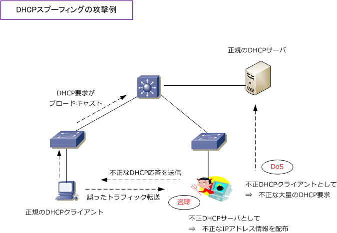

DHCP Spoofing
DHCPスプーフィングとは
DHCPスプーフィング攻撃は、不正な端末がDHCPクライアントやDHCPサーバになりすます攻撃です。 攻撃者が不正なDHCPクライアントになりすますことで、例えば、正規のDHCPサーバに大量のDHCP 要求を送信して、DHCPサーバの正常なサービスを妨害される恐れがあります。また、攻撃者が不正な DHCPサーバになりすますことで、正規のDHCPクライアントのDHCP要求に、不正なDHCP応答をして DHCPクライアントに意図しないIPアドレス情報を通知し、トラフィックを盗聴される恐れがあります。

※ DHCPリクエストがブロードキャストで送信されることから、同一VLAN内であれば容易になりすましが出来てしまいます。
Catalystスイッチにおけるスプーフィング対策
DHCPサーバが配置されているLAN環境で、スプーフィング（ なりすまし ）攻撃に対する対処方法として Catalystスイッチでは以下の3つの機能を提供できます。いずれの機能も、そのLANネットワークでDHCP サーバが配置されて、DHCPスヌーピングによって生成されるDHCPスヌーピングバインディングテーブル を利用することで実装可能なので、IPソースカードとDAIの使用は、DHCPスヌーピングの有効が前提です。
| スプーフィング対策機能 | 説明 |
|---|---|
| DHCPスヌーピング | DHCPスプーフィング対策（ DHCPクライアント、DHCPサーバのなりすまし対策 ） |
| IPソースガード | IPアドレススプーフィング対策（ 送信元IPアドレスのなりすまし対策 ） |
| Dynamic ARP Inspection | ARPスプーフィング対策（ ARPリプライのなりすまし対策。DAI とも呼ばれる。） |
現在の企業ネットワークでの実装
現在、多くの企業ネットワークでは、IEEE802.1X認証による証明書認証やMACアドレス認証などを行った上で スイッチポートに正常に接続させていることから、そもそも、不正なクライアント端末がスイッチに接続される ことは、先ずありません。従って、DHCPスプーフィング対策の実装を設定しているケースは少ないと言えます。